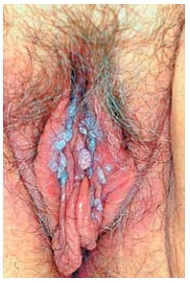
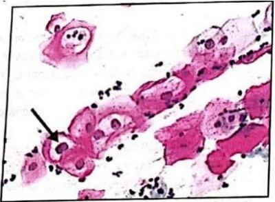
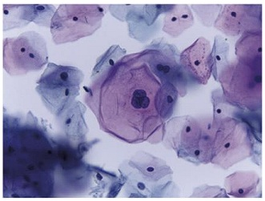
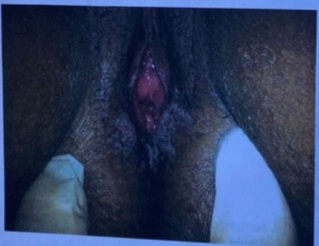
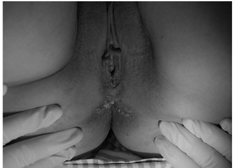

Questão 1 · Interpretação e conduta f rente as atipias citológicas · 4000184325Mulher, 47a, G2P2, retorna à Unidade Básica de Saúde para resultado de colpocitologia oncológica, coletada há um mês. Resultado: atipia de células glandulares sem outras especi cações (ACG-SOE). Nega alteração de exame anteriores. A ORIENTAÇÃO É:
A O resultado é anormal; encaminhar para exame de colposcopia e biópsia.
B O resultado é normal; deverá retornar para coleta de novo exame em três anos.
C O resultado é anormal e indica infecção por HPV; encaminhar para tratamento com cirurgia de alta frequência.
D O resultado é anormal, podendo estar associado à infecção por HPV ou processo inflamatório; retornar para coleta de novo exame em 12 meses.
Questão 2 · Diretrizes para o rastreamento · 4000184323Mulher, 66a, procura a Unidade Básica de Saúde para rotina de prevenção de câncer de colo uterino. Refere coleta de exames com intervalos trianuais desde os 25 anos, sem alterações. Último exame há um ano, normal. Sem queixas e exame físico normal.
A Interromper rastreamento de câncer de colo uterino.
B Coletar exame de colpocitologia oncológica e retorno para resultado. Se exame normal, interromper o rastreamento.
C Retornar em dois anos para coleta exame de colpocitologia oncológica. Se exame normal, interromper o rastreamento.
D Repetir colpocitologia oncótica em dois anos e solicitar ultrassonografia pélvica.
Questão 3 · Colo uterino · 4000184137Paciente, 30 anos, homem transgênero com preservação da vagina. Vida sexual com penetração vaginal, contracepção com DIU de cobre, sem uso de preservativo. Faz uso de terapia hormonal androgênica. Realiza coleta de citologia oncótica. Qual a implicação do ambiente androgênico na avaliação dos achados citológicos?
A diminuição de representação de células superficiais e melhor acurácia diagnóstica.
B aumento de representação de células superficiais e pior acurácia diagnóstica.
C diminuição de representação de células basais e melhor acurácia diagnóstica.
D aumento de representação de células basais e pior acurácia diagnóstica.
Questão 4 · Papilomavírus humano HPV · 4000183590Uma paciente de 29 anos, tabagista, em relação monogâmica com parceiro xo, em uso de contraceptivo oral, apresenta resultado positivo para infecção cervical pelo vírus do papiloma humano (HPV). Pode-se afirmar que
A há risco de câncer do colo do útero se infecção persistente pelos subtipos HPV-16 e HPV-18.
B caso não seja tratada em até 6 meses apresentará alto risco de desenvolvimento de lesões percussoras.
C a relação monogâmica e uso de contraceptivo são fatores contra o desenvolvimento de câncer de colo uterino.
D a infecção cervical pelo HPV é permanente e, raramente, regride, espontaneamente.
E o tabagismo não é um fator de risco para o desenvolvimento de câncer de colo uterino.
Questão 5 · Diretrizes para o rastreamento · 4000183458Mulher de 26 anos, G1P1, assintomática, leva ao ambulatório de ginecologia exame de Papanicolau realizado há 10 dias. O resultado revela
A Independente dos sintomas, os microrganismos possuem importância prognóstica, devendo a paciente ser tratada.
B O tratamento deve ser estipulado, uma vez que existe associação de bactérias e fungos revelando biota polimicrobiana.
C Lactobacillus e cocos dispensam tratamento, devendo realizar medicação tópica exclusivamente para a cândida.
D Deve-se seguir a rotina de rastreamento citológico habitual, estabelecendo tratamento específico nas sintomáticas.
E Como a paciente é assintomática, a orientação é encaminhar para colposcopia e biópsia se revelar mácula periorificial.
Questão 6 · Interpretação e conduta f rente as atipias citológicas · 4000183453Paciente de 30 anos, G1P1 (cesariana), procurou o serviço de ginecologia com queixa de sangramento genital esporádico há algumas semanas. Traz consigo um exame citológico (Papanicolau) mostrando células glandulares atípicas de significado indeterminado provavelmente não neoplásicas. O exame ginecológico revelou sangramento uterino anormal. De acordo com o cenário acima, qual a melhor conduta?
A Realizar novo exame citológico em três meses
B Realizar curetagem do canal endocervical
C Realizar colposcopia e avaliação endometrial
D Realizar histeroscopia diagnóstica com biópsia
E Realizar exérese de zona de transformação tipo 3
Questão 7 · Colposcopia · 4000183347São achados colposcópicos que sugerem câncer invasor do colo uterino: I. Vasos sanguíneos no formato de saca-rolhas. II. Contorno irregular da superfície com perda do epitélio superficial. III. Alteração do tom da cor do colo uterino, diferente do rosado. Quais estão corretos?
A Apenas I e II.
B Apenas I e III.
C Apenas II e III.
D I, II e III.
Questão 8 · Vacinas · 4000182797Assinale a assertiva correta sobre a vacina contra o papilomavírus humano.
A A vacina protege contra as infecções virais assintomáticas, mas não tem impacto no câncer de colo de útero.
B A vacina está indicada apenas para quem comprovadamente não teve contato com o vírus.
C Não é permitido vacinar mulheres com diagnóstico prévio de neoplasia intraepitelial vulvar.
D A vacina pode ser realizada em outras faixas etárias além daquelas contempladas pelo Programa Nacional de Imunizações, do Ministério da Saúde.
Questão 9 · Interpretação e conduta f rente as atipias citológicas · 4000182795Conforme as citopatológico (CP) do colo uterino, paciente atendida na UBS deve ser encaminhada para colposcopia se, em
A 2 CPs com amostra satisfatória, apresentar células escamosas e metaplásicas imaturas.
B 1 CP com amostra insatisfatória, a leitura for prejudicada pela intensa superposição celular.
C 1 CP com amostra satisfatória, apresentar lesão intraepitelial de baixo grau (LIBG).
D 1 CP com amostra satisfatória, apresentar células glandulares atípicas (AGC).
Questão 10 · Vacinas · 4000182738No Brasil, a recomendação do Ministério da Saúde com relação à vacinação contra o Papilomavirus Humano (HPV) para melhor eficácia da vacina é:
A As meninas e meninos devem ser vacinados logo após os 14 anos de idade completos
B A vacinação em gestantes deve ser realizada a partir do segundo trimestre.
C O esquema de vacinação em três doses deve ser realizado em mulheres imunossuprimidas.
D A vacinação deve ser realizada nas meninas após o início da atividade sexual.
Questão 11 · Interpretação e conduta f rente as atipias citológicas · 4000182279Mulher de 40 anos comparece ao ambulatório de patologia cervical com laudo de citologia, indicando células glandulares atípicas, não podendo afastar lesão de alto grau. A colposcopia é satisfatória e normal. Nesse caso, a conduta recomendada é:
A colher nova citologia e realizar ultrassonografia transvaginal
B solicitar exames pré-operatórios e indicar conização clássica
C prescrever estrogênio tópico e repetir a colposcopia após o uso
D curetar o canal cervical e iniciar antibioticoterapia polimicrobiana
Questão 12 · Interpretação e conduta f rente as atipias citológicas · 4000182131Mulher, 33 anos, G2PC2, último parto há 3 anos, realizou última coleta de colpocitologia durante o último pré-natal, sem anormalidades citológicas de acordo com a informação da paciente. Refere ciclos menstruais regulares em uso de contraceptivo hormonal injetável mensal. Comparece para checar o resultado da colócitologia que evidencia amostra satisfatória com epitélio metaplásico e cilíndrico e anormalidades em células glandulares sem outras especi cações. Qual a conduta mais adequada para esta paciente?
A Realizar cosposcopia.
B Realizar ultrassom transvaginal.
C Solicitar biologia molecular.
D Repetir colpocitologia
Questão 13 · Interpretação e conduta f rente as atipias citológicas · 4000181875Uma paciente de 27 anos apresenta um laudo de colpocitologia oncótica com células escamosas atípicas de significado indeterminado, possivelmente não neoplásicas (ASC-US). Segundo as Diretrizes Brasileiras para o Rastreamento do Câncer do Colo do Útero, a conduta subsequente é:
A Repetir citopatológico em 6 meses.
B Repetir citopatológico em 12 meses.
C Realizar colposcopia.
D Realizar conização.
E Realizar rastreio citológico trienal.
Questão 14 · Colposcopia · 4000181845A fase do ciclo mais adequada para a realização da colposcopia é
A a primeira fase.
B a segunda fase.
C o pré-menstrue.
D a pré-ovulatória.
Questão 15 · Diretrizes para o rastreamento · 4000181844No rastreamento do câncer de colo no Brasil, o Ministério da Saúde tem indicado que
A a citologia seja repetida com intervalo de 6 meses, em mulheres com idade superior a 30 anos, com resultado mostrando ASC-US.
B a citologia pode ser realizada a cada cinco anos, entre a idade de 30 a 64 anos, desde que dois exames, com intervalos anuais, sejam negativos.
C o início do rastreamento seja realizado a partir de 25 anos de idade, em todas as mulheres que iniciaram atividade sexual.
D o rastreamento com citologia em todas as mulheres com idade entre 25 a 64 anos, com atividade sexual, em intervalos trienais.
Questão 16 · Diretrizes para o rastreamento · 4000181742Mulher, 43 anos de idade, com abstinência sexual há 15 anos e papanicolau sem alterações significativas há 2 anos, vai à consulta na UBS muito preocupada com risco de câncer de colo uterino pois sua vizinha foi diagnosticada recentemente com essa afecção. A orientação mais adequada é:
A Realizar colposcopia e vulvoscopia.
B Discutir a histerectomia profilática.
C Não há indicação de coleta cérvico-vaginal.
D Indicar a realização de teste DNA-HPV.
Questão 17 · Interpretação e conduta f rente as atipias citológicas · 4000181732Após 6 meses de um resultado de citologia oncótica de colo uterino com resultado de atipia de células escamosas, provavelmente não neoplásicas (ASC-US), uma paciente de 34 anos repete o exame e apresenta o resultado: lesão intraepitelial de baixo grau (LIEBG). De acordo com as Diretrizes para o Rastreamento do Câncer do Colo do Útero, o próximo passo para o tratamento adequado é:
A Nova coleta de citologia oncótica em 12 meses.
B Realizar teste de DNA-HPV.
C Nova coleta de citologia oncótica em 6 meses.
D Encaminhar paciente à colposcopia.
Questão 18 · Interpretação e conduta f rente as atipias citológicas · 4000181424VSS, 36 anos, G4P4A0, comparece a UBS para receber resultado de citologia cérvico-vaginal colhida há 1 mês, que revelou ASC-US (Células escamosas atípicas de significado indeterminado). Qual a melhor conduta?
A Colposcopia e avaliação endometrial
B Manter periodicidade normal das suas citologias pois este achado não representa nenhum risco.
C Manter vigilância com citologia e encaminhar para colposcopia apenas se novos exames alterados.
D Colposcopia imediata, pela grande probabilidade de este achado citológico indicar a presença de lesão pré- neoplásica do colo uterino.
Questão 19 · Diretrizes para o rastreamento · 4000181280A prevenção do câncer de colo uterino, em seus cinco níveis, requer o conhecimento sobre os fatores de risco, rastreamento, diagnóstico e tratamento das lesões precursoras e das lesões invasoras. Assim, sobre as estratégias de prevenção do câncer de colo uterino no Brasil, assinale a alternativa correta.
A O exame de Papanicolaou do colo uterino deve ser realizado em mulheres de 25 a 64 anos de idade completos.
B A realização do exame de Papanicolaou do colo de útero deve ser realizado de forma anual, independentemente de resultados anteriores.
C Não se deve colher exame de Papanicolaou do colo uterino de gestantes.
D As mulheres devem ser submetidas à coleta de Papanicolaou do colo uterino assim que iniciarem a atividade sexual.
E A idade para a vacinação contra HPV em meninas, preconizada pelo Programa Nacional de Imunizações no Brasil, é de 9 – 16 anos.
Questão 20 · Interpretação e conduta f rente as atipias citológicas · 4000177451Paciente de 26 anos nunca realizou citologia oncológica (CO) e vem para sua primeira consulta com ginecologista. Paciente sem queixas. Nega comorbidades. Foi realizado exame físico completo e coleta de CO. No retorno, traz resultado que mostra células escamosas atípicas de significado indeterminado, não se podendo afastar lesões neoplásicas (ASC-H) de alto grau. De acordo com as Diretrizes Brasileiras para o rastreamento do câncer do colo uterino e o INCA/Ministério da Saúde, a paciente deverá
A ser tranquilizada e repetir CO com 6 meses.
B realizar conização de imediato.
C ser tranquilizada e repetir CO com 12 meses.
D realizar colposcopia.
Questão 21 · Interpretação e conduta f rente as atipias citológicas · 4000171001Mulher de 32 anos comparece à consulta para mostrar resultado de colpocitologia cujo laudo indica lesão de alto grau, não podendo excluir carcinoma epidermoide invasor. Diante desse resultado, a conduta adequada é indicar:
A conização
B colposcopia
C histerectomia total
D cirurgia de Piver 3
Questão 22 · Diretrizes para o rastreamento · 4000170636João, homem trans de quarenta anos de idade, foi à consulta de acompanhamento de hormonização, na UBS, com seu médico de família. Entre os temas tratados na consulta, o médico abordou os rastreamentos populacionais para ele. Com base nesse caso hipotético e no que determina o Ministério da Saúde, o rastreamento mais apropriado, considerando-se que João esteja sem sintomas na consulta e não possua antecedentes familiares de neoplasias, seria
A PSA total e livre e toque retal.
B PSA total e livre.
C colpocitologia oncótica e ultrassonografia das mamas.
D somente colpocitologia oncótica.
E colpocitologia oncótica e mamografia.
Questão 23 · Diretrizes para o rastreamento · 4000170617Uma mulher de 33 anos de idade, em atividade sexual desde os vinte anos de idade, iniciou coleta de citologia oncológica (Papanicolau) aos 25 anos, tendo feito o exame aos 26 anos, aos 29 anos e há cerca de um ano, aos seus 32 anos, todos com resultado negativo para neoplasia ou lesão precursora de câncer. Como faz anualmente, foi ao ginecologista para consulta de rotina, sendo que teve de trocar de médico por causa do plano de saúde. Não apresenta queixas ou antecedentes mórbidos e possui parceiro único. O pro ssional que a atendeu solicitou uma bateria de exames e realizou a coleta de material para a citologia oncológica (Papanicolau). Com base nesse caso hipotético, é correto afirmar que o profissional
A agiu corretamente ao coletar o material para a citologia oncológica (Papanicolau), pois esse exame deve ser realizado anualmente.
B deveria ter solicitado uma colposcopia, pois não é possível afirmar sobre a promiscuidade do parceiro.
C se precipitou ao coletar o material para a citologia oncológica (Papanicolau), pois, no caso da paciente, esse exame pode ser feito a cada três anos.
D agiu corretamente ao coletar o material para a citologia oncológica (Papanicolau), pois a paciente não apresentava três exames consecutivos negativos.
E agiu corretamente ao coletar o material para a citologia oncológica (Papanicolau), uma vez que a paciente não possui resultado negativo de captura híbrida para HPV.
Questão 24 · Papilomavírus humano HPV · 4000170041Mulher de 58 anos apresenta lesões assintomáticas na vulva há seis meses, conforme a imagem. Antecedente pessoal: HAS e portadora do HIV, com carga viral indetectável e CD4+ 300 células/mm³, em uso regular de TARV e captopril. Refere prática sexual sem preservativo no último ano, porém, sem parceiro fixo. De acordo com seu diagnóstico, pode-se afirmar que as lesões vulvares

A podem ser tratadas ambulatorialmente com ácido tricloroacético 90%.
B são causadas por HPV de alto risco oncogênico.
C são devido à sífilis maligna precoce no HIV, devendo ser tratadas com penicilina benzatina, 2400000 UI, intramuscular, dose única.
D são de molusco contagioso em paciente imunossuprimido e devem ser tratadas com curetagem.
Questão 25 · Tratamento · 4000170036Mulher de 35 anos apresenta lesão intraepitelial de alto grau em citologia oncótica de colo uterino (HSIL). Colposcopia: zona de transformação tipo 1 com áreas de epitélio branco espesso e mosaico grosseiro, restritas ao colo, sem sinais de invasão ou doença glandular. A conduta correta é:
A repetir a citologia oncótica, direcionando a coleta de amostras das áreas alteradas, sob colposcopia.
B propor o “ver e tratar” e realizar exérese da zona de transformação do tipo 1.
C solicitar a genotipagem de HPV e agendar retorno breve.
D solicitar a revisão da lâmina e propor rastreamento para cervicites.
Questão 26 · Populaçãoalvo e intervalo · 4000169970Mulher com 35 anos, III gesta III para, portadora de metrorragia por miomatose, sempre apresentou colpocitologia oncologia negativa e teve indicada histerectomia total, e a peça cirúrgica confirmou esse diagnóstico. Quanto aos exames preventivos a serem realizados a partir da cirurgia,
A devem continuar a ser anuais.
B devem ser realizados a cada 5 anos.
C devem ser a cada 3 anos.
D podem ser dispensados.
E devem ser complementados com colposcopia.
Questão 27 · Colo uterino · 4000169425Em mulheres assintomáticas que, ao exame ginecológico, foram diagnosticadas com ectopia ou distopia, o que faz com que o epitélio da endocérvice fique para fora do orifício externo anatômico do colo uterino, a melhor conduta será a
A eletrocauterização do colo uterino, pela possibilidade aumentada de contrair infecção por HPV.
B conduta expectante.
C aplicação de ácido tricloroacético.
D vaporização com
E cauterização e o tratamento para
Questão 28 · Ginecologia · Colo uterino · 4000169286Mulher, 19 anos, G=1, P=0, A=1, coitarca aos 14 anos, usuária de contraceptivo hormonal oral, procurou serviço médico em UBS por conta de corrimento vaginal mucoso de longa data. Realizada a coleta de colpocitologia oncótica, que mostrou suspeita de lesão intra-epitelial cervical de alto grau - (NIC=II/III). Submetida à colposcopia e biopsia de lesão, em área de pontilhado fino, foi diagnosticada como NIC=II. A conduta ideal para esta paciente é:
A Histerectomia simples abdominal ou vaginal.
B Conização de colo de útero com bisturi a frio.
C Seguimento com colpocitologia e colposcopia semestrais por 2 anos.
D Conização de colo de útero com alça (cirurgia de alta frequência - CAF).
Questão 29 · Interpretação e conduta f rente as atipias citológicas · 4000169095A recomendação correta frente a um resultado alterado na citologia cervicovaginal com
A lesão de alto grau (HSIL) é colher DNA-HPV em 12 meses.
B AGC (células glandulares atípicas de significado indeterminado) é repetir citologia em 6 meses.
C AOI (células atípicas de origem indefinida) é repetir citologia em 6 meses.
D lesão de baixo grau (LSIL) é repetir citologia em 6 meses.
E ASCUS entre 25 a 29 anos de idade é repetir citologia em 12 meses.
Questão 30 · Vacinas · 4000169005Acerca da vacina contra o papiloma vírus humano (HPV) é correto afirmar que
A apenas pacientes virgens devem ser vacinadas.
B para homens pode ser feita, segundo a bula, até os 42 anos de idade.
C recentemente foi liberada pelo Sistema Único de Saúde (SUS) para imunocomprometidas até os 45 anos de idade.
D para mulheres, segundo a bula, pode ser feita até os 52 anos de idade.
E a idade de início para meninas no SUS é de 7 anos de idade.
Questão 31 · Interpretação e conduta f rente as atipias citológicas · 4000169004Uma paciente de 32 anos de idade, com diagnóstico anatomopatológico de lesão intraepitelial de alto grau. Nesse caso, qual a melhor conduta terapêutica?
A As lesões de alto grau de colo uterino são sempre tratadas com conização e lâmina fria.
B A conduta deve ser expectante pela idade da paciente.
C Indicar histerectomia.
D A cauterização química com ácido tricloroacético.
E A conização que pode ser a frio ou com alça de alta frequência.
Questão 32 · Rastreamento do câncer de colo do útero · 4000168279O achado visto ao exame citopatológico de colo uterino (imagem abaixo) sugere a possibilidade de contaminação por:

A Clamídia trachomatis.
B Trichomonas vaginalis.
C Herpes simplex tipo 2.
D papilomavírus humano.
Questão 33 · Diretrizes para o rastreamento · 4000167397Mulher, 23a, procura o Unidade Básica de Saúde para consulta ginecológica de rotina, refere vida sexual ativa há 10 meses. Antecedente pessoal: transplante renal, em terapia imunossupressora. A ORIENTAÇÃO EM RELAÇÃO À PREVENÇÃO DE CÂNCER DE COLO UTERINO É:
A Coleta de colpocitologia oncológica aos 25 anos, com intervalo anual nos dois primeiros exames. Não há indicação de vacinação pela faixa etária.
B Coleta de colpocitologia oncológica agora, com intervalo anual. Indicada vacinação para HPV com duas doses tempo 0-6 meses.
C Coleta de colpocitologia oncológica aos 25 anos, com intervalo anual nos dois primeiros exames. A vacina é contraindicada para população transplantada.
D Coleta de colpocitologia oncológica agora com intervalo semestral no primeiro ano. Vacinação para HPV com três doses tempo 0-3-12 meses.
Questão 34 · Rastreamento do câncer de colo do útero · 4000167390Mulher, 32a, G3P2A0, comparece para primeira consulta de pré-natal com 15 semanas de amenorreia. Última citologia oncótica de colo uterino com resultado de lesão intra-epitelial de baixo grau, realizada há dois anos. A CONDUTA É:
A Realizar colposcopia após 20 semanas de gestação.
B Realizar colposcopia após o parto.
C Coletar citologia oncótica de colo uterino em 1 ano.
D Coletar citologia oncótica de colo uterino nesta consulta.
Questão 35 · Diagnóstico e Exames Complementares · 4000166410Segundo a Organização Mundial da Saúde, o climatério compreende o período de vida da mulher entre o nal da fase reprodutiva e a senilidade. Em geral, varia dos 40 aos 65 anos. Nesse período, ocorre a menopausa, definida como a interrupção permanente da menstruação após 12 meses de amenorreia. Sobre o climatério, sabe-se que:
A o diagnóstico deve ser confirmado com as dosagens de prolactina e LH.
B os fogachos são sensações transitórias súbitas de calor que se iniciam nos pés e sobem em direção às pernas e joelhos.
C dentre os exames complementares para sua propedêutica, a RNM de tórax e cintilografia óssea são mandatórias.
D a mamografia e a colpocitologia oncoparasitária são fundamentais na propedêutica básica do climatério.
Questão 36 · Rastreamento do câncer de colo do útero · 4000166166Uma paciente de 55 anos de idade foi submetida à colposcopia, por apresentar ASCH no exame de Papanicolau. Na colposcopia, foi evidenciada JEC justa ori cial e presença de pontilhado grosseiro adentrando o canal endocervical, com visualização completa da lesão. Com base nesse caso hipotético, assinale a alternativa que apresenta, correta e respectivamente, o provável diagnóstico anatomopatológico e conduta a ser adotada.
A NIC 1 e seguimento em seis meses
B NIC 1 e seguimento em um ano
C NIC 2 e CAF com excisão do tipo 1
D NIC 2 e CAF com excisão do tipo 2
E NIC 2 e CAF com excisão do tipo 3
Questão 37 · Interpretação e conduta f rente as atipias citológicas · 4000164957Mulher, 20 anos, comparece à consulta, pois realizou um exame colpocitológico para rastreio de câncer de colo, há 1 mês, e o resultado foi de lesão intraepitelial de baixo grau (LSIL). Assustada, buscou uma segunda opinião médica. Considerando- se as Diretrizes Brasileiras para o rastreamento do câncer do colo uterino do Ministério da Saúde de 2016, a conduta mais apropriada é recomendar a essa paciente que:
A realize colposcopia imediatamente
B repita nova citologia em 1 ano
C repita nova citologia em 3 anos
D realize a captura híbrida para vírus do papiloma humano
Questão 38 · Coleta da colpocitologia oncótica · 4000164523A coleta dupla é preconizada no sistema público de saúde do Brasil como forma de rastreamento do câncer de colo uterino. Correlacione os números da figura abaixo com a sequência correta da coleta dupla, a qual inicia com a colocação do espéculo de:

A Cusco (2), seguida do raspado da ectocérvice em 360º com a espátula (7) com a parte redonda, dilatação do colo com (5), raspado do canal cervical, em movimentos de vai e vem e rotação com (8), pôr o material colhido em camada espessa em (1) e fixação com (3), limpeza da vagina com gaze montada em Cheron (4).
B Collins (2), seguida da remoção do excesso de secreção com algodão montado em pinça (4), raspado em 360º da ectocérvice com espátula (7), introdução da escova (8) a 1,5 cm do colo, em movimentos de vai e vem e rotação e colocação do material colhido em camada fina em (1) e fixação imediata com (3).
C Graeve (2), seguida da remoção do excesso de secreção com algodão com pinça (4), introdução da escova (8) a 1,5 cm do colo, em movimentos de vai e vem e rotação, raspado da ectocérvice em 360º com espátula (7), colocação do material colhido em duas camadas separadas em (1) e fixação imediata com éter (3).
D Pederson (2), seguida da coleta de material do fundo de saco vaginal com a parte redonda da espátula de Ayre (7), raspado da ectocérvice em 360º com a borda em rabo-de-peixe de (7), colocação do material colhido com a espátula de Ayre em camadas finas em lâminas separadas (1) e fixação imediata com álcool a 70% (3).
Questão 39 · Papilomavírus humano HPV · 4000164522Paciente de 28 anos, sexualmente ativa, apresenta colo uterino com área acetobranca com pontilhado no. A citologia do raspado cervical (em meio líquido) está representada abaixo. O diagnóstico mais provável é:

A Tricomoníase.
B Gardnerella vaginalis.
C Papilomavírus humano.
D Candidíase.
Questão 40 · Interpretação e conduta f rente as atipias citológicas · 4000164277Mulher, 32 anos, G1P1, usuária de implante de etonogestrel, vivendo com HIV há 5 anos em uso de terapia antirretroviral com carga viral abaixo do limite de detecção e contagem de linfócitos TCD4 de 350 células/mm³. Resultado da colpocitologia coletada há 1 mês: amostra satisfatória, epitélio escamoso glandular e células compatíveis com lesão intraepitelial de baixo grau. De acordo com as Diretrizes Brasileiras do Instituto Nacional do Câncer (2016), qual melhor conduta?
A Realizar colposcopia imediatamente.
B Coletar biologia molecular.
C Repetir a citologia em seis meses.
D Realizar tratamento excisional.
Questão 41 · Condiloma · Papilomavírus humano HPV · 4000164269Primigesta, 16 anos, 21 semanas, refere lesões na vulva há 30 dias. Na consulta Unidade Básica de Saúde, a avaliação da genitália evidencia as lesões mostradas na figura 1. Qual a melhor conduta para esse caso?

A Ácido tricloacético 80%.
B Podofilotoxina.
C Expectante.
D Imiquimode.
Questão 42 · Diretrizes para o rastreamento · 4000164100Mulher de 23 anos procura a UBS para coleta de exame preventivo do câncer de colo uterino. Refere menarca aos 13 anos e sexarca aos 17. Informa que já teve relações sexuais com homens, mas atualmente mantém relações apenas com mulheres. Nesse caso, segundo as diretrizes do Ministério da Saúde, o pro ssional de saúde deve orientar à paciente que no momento:
A será colhido o exame e que ela deverá manter o rastreamento anual até os 64 anos de idade
B será colhido o exame e que ela deverá manter o rastreamento trienal até os 64 anos de idade
C não será colhido o exame e que ela deverá retornar apenas caso volte a ter relações sexuais com homens
D não será colhido o exame e que ela deve retornar aos 25 anos, idade em que é iniciado o rastreamento desse tipo de câncer
Questão 43 · Interpretação e conduta f rente as atipias citológicas · 4000164071Mulher de 38 anos comparece à consulta de ginecologia para mostrar resultado de exame preventivo com seguinte laudo: “Amostra satisfatória. Microbiologia: Candida albicans. Células glandulares atípicas de significado indeterminado”. Nega sintomas de odor, prurido ou secreção vaginal. A conduta recomendada pelo Ministério da Saúde é:
A solicitar exame de imagem e encaminhar para colposcopia
B solicitar exame de imagem e repetir o exame em 6 meses
C tratar candidíase e encaminhar para colposcopia
D tratar candidíase e repetir o exame em 6 meses
Questão 44 · Papilomavírus humano HPV · 4000151663Adolescente de 15 anos queixa-se de nódulos vulvares. Relata vida sexual com parceiro xo há 1 ano e utilização de contraceptivo oral, sem uso de preservativo. Exame físico: pequenas verrugas pedunculadas no introito vaginal e na região perianal. O agente etiológico é:
A Herpes vírus.
B Haemophylus ducreyi.
C Chlamydia trachomatis.
D Papilomavírus humano.
Questão 45 · Lesão intraepitelial de alto grau · 4000151629Paciente com 35 anos de idade, G=3 P=3 A=0, encaminhada da Unidade Básica de Saúde (UBS) com resultado de Colpocitologia Oncótica (CO) de Lesão intra-epitelial de alto grau (LIE-AG). Qual das alternativas abaixo é o próximo passo para esta paciente?
A Realizar Colposcopia.
B Realizar Histerectomia Total.
C Fazer acompanhamento da lesão com CO de 6/6 meses.
D Repetição da CO em 6 meses, se persistir, fazer Colposcopia.
Questão 46 · Populaçãoalvo e intervalo · 4000146005Mulher, 19 anos idade, em consulta de rotina na Unidade Básica de Saúde. Vida sexual ativa, com parceiro único há 2 anos. Em uso de DIU de cobre. Na consulta, a paciente questiona quanto à necessidade de realização de citologia oncótica de colo uterino. Na orientação, o profissional de saúde dirá que esta paciente deverá:
A Iniciar a realização do procedimento na presente consulta, repetindo-o anualmente até os 30 anos de idade.
B Iniciar a realização do procedimento aos 25 anos de idade.
C Iniciar a realização do procedimento na presente consulta repetindo-o a cada 3 anos, após dois exames anuais normais.
D Realizar o procedimento uma vez ao ano até os 25 anos de idade, com colposcopia com biópsia a cada 5 anos.
Questão 47 · Células escamosas atípicas de signif icado indeterminado possivelmente nãoneoplásicaas ASCUS · 4000146000Mulher, 19 anos de idade, retorna em consulta com resultado de Papanicolau de 12 meses atrás: Células Escamosas Atípicas de Significado Indeterminado - ASC-US. Considerando os protocolos atuais, qual é a conduta indicada?
A Indicar conização.
B Coletar novo Papanicolau.
C Encaminhar à colposcopia.
D Realizar nova coleta após os 25 anos de idade.
Questão 48 · Lesão intraepitelial escamosa de baixo grau · 4000145918Uma paciente de 23 anos de idade, com vida sexual ativa e assintomática, realizou colpocitologia cujo resultado foi lesão intraepitelial escamosa de baixo grau. Teste de HPV-DNA foi negativo. Com base nesse caso hipotético, assinale a alternativa que apresenta a conduta mais adequada segundo o Ministério de Saúde.
A repetir colpocitologia em três anos
B repetir exames imediatamente
C colposcopia
D cauterização da zona de transformação
E excisão da zona de transformação
Questão 49 · Papilomavírus humano HPV · 4000145867No que se refere às doenças causadas pelo papilomavir
A As mulheres com verrugas anogenitais requerem um exame ginecolo
B Na
C O HPV pode ser classificado em tipos de baixo risco oncogênico e em tipos de alto risco oncogênico. Sendo assim, como método de prevenção primária, sa
D A vacinac
E Apenas pacientes do sexo feminino com leso
Questão 50 · Populaçãoalvo e intervalo · Diretrizes para o rastreamento · 4000145702Mulher, 65 anos, vem à consulta na Unidade Básica de Saúde para avaliação de abaulamento genital. Nunca havia consultado com ginecologista anteriormente. Gesta IV. para IV, quatro partos normais. Dois parceiros. Menopausa aos 51 anos. De acordo com o Ministério da Saúde, a conduta visando à prevenção do câncer de colo uterino dessa paciente deve ser
A dispensar o rastreio, uma vez que a paciente já passou da faixa etária preconizada, que vai até 64 anos
B colher duas citologias com intervalo de um a três anos e, se ambas estiverem negativas, dispensar do rastreio
C colher duas citologias com intervalo de um a três anos e, se ambas estiverem negativas, manter rastreio trienal.
D colher duas citologias com intervalo de um ano e, se ambas estiverem negativas, manter rastreio trienal por mais 10 anos
E colher uma citologia e, se estiver negativa, dispensar do rastreio, porque a paciente tem mais de 64 anos
Questão 51 · Vacinas · Vacina contra HPV · 4000145498O câncer invasor do colo do útero é considerado um câncer evitável porque o estágio pré-invasor é longo e os programas de rastreamento por exame colpocitológico possibilitam tratamento das lesões pré-invasoras de modo e caz. A respeito da prevenção e rastreamento do câncer de colo uterino, assinale a alternativa CORRETA:
A A duração da imunidade conferida pela vacina quadrivalente para o HPV está bem estabelecida, mesmo quando administrada após os 25 anos de idade
B A vacina contra o HPV é uma ferramenta bem estabelecida de prevenção secundária das lesões precursoras do câncer do colo uterino
C As mulheres que receberam a vacina contra o HPV antes de iniciarem a atividade sexual, não precisam fazer a colpocitologia oncótica como método de rastreamento para o câncer do colo uterino, mesmo após iniciarem vida sexual
D Meninas de 9 a 14 anos e meninos de 11 a 14 anos podem tomar a vacina contra o HPV gratuitamente no Sistema Único de Saúde. Para os portadores do HIV, a faixa etária é mais ampla (9 a 26 anos) e o esquema vacinai é de três doses (intervalo de O, 2 e 6 meses)
Questão 52 · Lesão intraepitelial de alto grau · 4000144681Mulher, 35 anos de idade, trouxe exame citológico cérvico-vaginal com lesão de alto grau. Realiza colposcopia com a junção escamo-colunar (JEC) completamente visível e área de epitélio acetobranco denso margeandoa JEC de 11 a 1 hora ectocervical (zona de transformação tipo 1). De acordo com as diretrizes de rastreamento do câncer de colo uterino (2016) do Ministério da Saúde, a conduta é:
A biópsia da atipia colposcópica.
B cauterização da lesão.
C excisão da zona de transformação.
D curetagem de canal endocervical.
Questão 53 · Papilomavírus humano HPV · 4000144456Há muito se investiga a correlação entre o HPV (Vírus do Papiloma Humano) e a neoplasia cervical e até o momento foram descobertos mais de 120 tipos de HPV no trato genital. Dentre eles, a maior correlação com a neoplasia de colo uterino ou de maior potencial oncogênico inclui os tipos:
A 6 e 11.
B 16 e 18.
C 31 e 33.
D 43 e 44.
Questão 54 · Populaçãoalvo e intervalo · 4000144455No rastreamento do câncer genital feminino através da citologia oncótica, é correto afirmar que:
A Não deve ser realizado em gestante pelo baixo risco do câncer do colo uterino nesta condição.
B Deve ser realizado com maior frequência nas mulheres na pós-menopausa pelo risco provocado pelo desequilíbrio hormonal.
C Deve ser realizado em mulheres submetidas à histerectomia por apresentar maior risco para o câncer genital.
D A recomendação é de não realizar o rastreamento em mulheres que não tenham iniciado atividade sexual.
Questão 55 · Lesão intraepitelial escamosa de baixo grau · 4000144260Paciente de 22 anos iniciou atividade sexual há 6 meses e veio à consulta ginecológica para iniciar contracepção. Foi colhida a citologia para rastreio de câncer do colo uterino e o resultado apontou amostra satisfatória com células escamosas e metaplásicas e anormalidades em células escamosas compatíveis com lesão intraepitelial de baixo grau. O manejo adequado para esta paciente deve incluir:
A Prescrever a vacina para HPV (papilomavírus humano) e realizar colposcopia.
B Encaminhar parceiro para exame e repetir citologia em seis meses.
C Orientações de uso de preservativo e nova citologia em três anos.
D Solicitar sorologias para Infecções sexualmente transmissíveis e realizar biópsia no colo uterino.
Questão 56 · Lesão intraepitelial escamosa de baixo grau · 4000143233Gestante de 14 semanas realiza colpocitologia oncótica com resultado de lesão intraepitelial escamosa de baixo grau. A conduta adequada, nesse caso, é:
A indicar EZT
B indicar conização
C realizar colposcopia
D realizar captura híbrida
Questão 57 · Lesão intraepitelial escamosa de baixo grau · 4000142178Uma paciente de 19 anos de idade procura um ginecologista, para consulta de rotina, e informa que gostaria de realizar a coleta de exame citopatológico do colo do útero, pois já iniciou a vida sexual. Ao exame físico, o médico identi ca paredes vaginais e colo do útero sem lesões visíveis a olho nu, e realiza coleta de material, conforme a técnica padrão. Após 15 dias, recebe o resultado do exame com diagnóstico de lesão intraepitelial escamosa de baixo grau (LSIL). A respeito desse caso clínico e considerando as Diretrizes Brasileiras para o Rastreamento de Câncer de Colo do Útero, assinale a alternativa correta.
A A coleta do exame citopatológico foi indicada corretamente, pois a paciente já teve relações sexuais, estando exposta ao vírus do HPV e, portanto, com chances de desenvolver lesões cervicais precursoras do câncer de colo do útero.
B A paciente deverá ser encaminhada para a colposcopia.
C A paciente deverá repetir o exame em seis meses.
D A paciente deverá repetir o exame em um ano e, caso o resultado seja normal, deve realizar nova coleta somente aos 25 anos de idade.
E A paciente deverá repetir o exame em três anos e, caso se mantenha com lesão intraepitelial escamosa de baixo grau (LSIL), deverá repetí-lo novamente em três anos.
Revisar: possível letra faltando em enunciado
Questão 58 · Métodos moleculares para o diagnóstico · 4000141164O uso de testes de biologia molecular para pesquisa de HPV de alto risco oncogênico no colo uterino pode ser utilizado como estratégia de rastreamento de câncer de colo. No Brasil, o principal motivo desta estratégia não ser utilizada é:
A Alta incidência de câncer em mulheres abaixo de 40 anos
B Uso da vacinação para HPV para meninos e meninas
C Alto custo dos testes moleculares para detecção de HPV
D Necessidade de migração para sistema de rastreamento organizado
Questão 59 · Lesão intraepitelial escamosa de baixo grau · 4000141019Em paciente com alteração histopatológica no colo uterino NIC 1 (lesão intraepitelial escamosa de baixo grau) em biopsia realizada durante colposcopia, a melhor conduta é:
A extensa cauterização elétrica da zona de transformação do colo.
B histerectomia, pois são altos os índices de invasão no intervalo de 2 anos.
C exérese da zona de transformação do colo, com análise imuno-histoquímica.
D exérese da zona de transformação do colo, com análise anatomopatológica.
E expectante, com controle citológico e colposcópico semestral.
Questão 60 · Lesão intraepitelial de alto grau · 4000140556Uma mulher de 35 anos comparece à Unidade Básica de Saúde (UBS) para receber o laudo do exame de Papanicolaou. O resultado revelou lesão intraepitelial de alto grau (LIEAG), candidíase e componente inflamatório moderado. Diante desse resultado, o médico da estratégia da saúde da família deverá
A convocar o marido para exame de peniscopia e, caso não seja detectada uma lesão por papilomavírus humano, acompanhar a paciente com preventivo semestral.
B tratar a candidíase e orientar a paciente a repetir o preventivo semestralmente, pois a infecção por fungo é causa comum de LIEAG.
C tratar a candidíase, indicar colposcopia e biópsia para identificar e confirmar lesões de alto grau.
D indicar, de imediato, uma conização por se tratar de uma lesão de alto grau e, portanto, não é necessária colposcopia com biópsia.
Questão 61 · · 4000139814Células escamosas atípicas de signif icado indeterminado quando não se pode excluir lesão de alto grau ASCH A.L.G., 24 anos, G1C1, é usuária de pílula anticoncepcional (etinilestradiol 20 mcg + drospirenona 3 mg) e portadora do vírus HIV, usando medicação antirretroviral e com carga viral indetectável. Veio à consulta para ver resultado do Papanicolaou, que foi o seguinte: ASC-H - Células escamosas atípicas de significado indeterminado, não podendo excluir lesão intraepitelial de alto grau. Segundo as Diretrizes Brasileiras para o Rastreamento do Câncer do Colo do Útero, assinale a alternativa que apresenta a conduta correta para esse caso.
A A paciente não se encontra dentro da faixa etária recomendada para coleta citológica cervical.
B A paciente deve ser orientada a retornar para consulta dentro de 6 meses para nova coleta de citologia cervical.
C A paciente deve ser encaminhada ao serviço especializado para realização de colposcopia.
D A paciente deve ser submetida à coleta imediata de teste para detecção do DNA HPV.
E A paciente deve ser orientada a retornar para consulta dentro de um ano para nova coleta de citologia cervical.
Questão 62 · Lesão intraepitelial de alto grau · 4000139811Paciente com 54 anos de idade é portadora de lesão escamosa intraepitelial de alto grau identi cada no exame citopatológico de rotina. A colposcopia demonstrou achados maiores (classificação Rio/2011) nos dois quadrantes superiores do colo do útero, sendo que tanto a junção escamo-colunar quanto os limites cranial e caudal foram visualizados no exame. Nesse caso, qual é a conduta correta?
A Histerectomia radical sem linfadenectomia.
B Traquelectomia radical.
C Amputação alargada do colo uterino.
D Exérese da zona de transformação com a cirurgia de alta frequência.
E Histerectomia total abdominal com retirada do terço superior de vagina.
Questão 63 · Lesão intraepitelial de alto grau · 4000139810Paciente com 30 anos de idade está na 14ª semana de gestação e é portadora de resultado de exame citopatológico cérvico-vaginal compatível com lesão intraepitelial escamosa de alto grau (HSIL). Ao exame colposcópico, foram visualizadas alterações correspondentes a achados maiores (classificação Rio/2011), abrangendo os quatro quadrantes do colo uterino, porém sem critérios para lesão invasora. Qual é a conduta preconizada para esse caso?
A Repetir a citologia 90 dias após o parto.
B Exérese da zona de transformação com a cirurgia de alta frequência.
C Solicitar a coloração da lâmina da citologia inicial com o p16/ki67.
D Realizar o teste do DNA-HPV.
E Realizar biopsia da lesão em seus quatro quadrantes.
Questão 64 · Lesão intraepitelial escamosa de baixo grau · 4000137458Mulher, 20 anos, sexualmente ativa, comparece a consulta de rotina com um resultado de colpocitologia tríplice compatível com lesão intraepitelial escamosa de baixo grau (LSIL). De acordo com as Diretrizes para o Rastreamento do Câncer do Colo do Útero de 2016, publicadas pelo Ministério da Saúde, a conduta mais adequada para essa paciente é:
A repetir o exame colpocitológico 6 meses após a data da coleta anterior.
B realizar colposcopia e biópsia da lesão imediatamente.
C repetir o exame colpocitológico 3 anos após a data da coleta anterior.
D realizar captura híbrida para HPV para definir momento de nova colpocitologia.
Questão 65 · Populaçãoalvo e intervalo · 4000137452Mulher, 17 anos, iniciou vida sexual há 1 ano. Comparece a consulta para avaliação de rotina. Sem queixas no momento. De acordo com as Diretrizes para o Rastreamento do Câncer do Colo do Útero de 2016, publicadas pelo Ministério da Saúde, essa paciente deve iniciar o rastreio de câncer cervical por meio de colpocitologia oncótica:
A a partir dos 20 anos de idade.
B imediatamente.
C 2 anos após a sexarca.
D a partir dos 25 anos. de idade
Questão 66 · Lesão intraepitelial escamosa de baixo grau · 4000133755Paciente de 27 anos, nuligesta, realizou colpocitologia oncótica que evidenciou lesão intraepitelial escamosa de baixo grau (LSIL). De acordo com as diretrizes estabelecidas pelo Ministério da Saúde – Instituto Nacional do Câncer (2016), a paciente deve ser orientada a:
A realizar colposcopia.
B realizar exérese de zona de transformação .
C repetir o exame colpocitológico em 12 meses na unidade de atenção primária.
D repetir o exame colpocitológico em seis meses na unidade de atenção primária.
Questão 67 · Coleta da colpocitologia oncótica · 4000131334A colpocitologia oncológica é o estudo das células esfoliadas cervicovaginais, utilizada para o rastreamento do câncer de colo do útero. A coleta, o preparo e a interpretação da lâmina devem obedecer aos critérios de qualidade e a classificação vigente. É um exemplo de critério para o diagnóstico em patologia cervical:
A o achado de células escamosas e glandulares, na amostra, são considerados dentro dos limites da normalidade do material examinado.
B o encontro de epitélio metaplásico é um achado anormal no exame colpocitológico.
C as células atípicas de significado indeterminado são as escamosas (AGC) e as glandulares (ASC-US).
D a lesão intraepitelial de baixo grau compreende o NIC graus II e III.
Questão 68 · Populaçãoalvo e intervalo · 4000131155Uma paciente de 56 anos de idade comparece à consulta com o ginecologista para revisão. Refere realizar exames ginecológicos de rastreamento, conforme orientação do médico clínico geral que a atendia até então. Informa que faz uso de cálcio, vitamina D e sinvastatina, por histórico de osteoporose identi cada em densitometria óssea (DMO) prévia, e dislipidemia. Recentemente recebeu diagnóstico de nefrolitíase após crise de dor renal. Relata ser tabagista e etilista desde os 23 anos de idade, e o peso atual dela é 54 kg. Teve dois partos vaginais prévios, menarca aos 12 anos e menopausa aos 38 anos de idade. Nega ter realizado terapia de reposição hormonal. Considerando esse caso clínico e com base nas recomendações do Ministério da Saúde para exames de rastreamento e nos conhecimentos médicos correlatos, julgue os itens a seguir. A paciente poderia realizar o exame citopatológico do colo do útero a cada três anos, caso tenha dois resultados anuais consecutivos negativos.
A Certo.
B Errado.
Questão 69 · Células escamosas atípicas de signif icado indeterminado possivelmente nãoneoplásicaas ASCUS · 4000129751Uma paciente de 32 anos, apresentou, na citologia oncótica, células escamosas atípicas de significado indeterminado (ASC- US). Segundo as Diretrizes Brasileiras para o Rastreamento de Câncer de Colo de Útero do Ministério da Saúde (2016), a conduta é:
A Encaminhar paciente para colposcopia.
B Repetir o exame citológico em seis meses.
C Repetir o exame citológico em três anos.
D Realizar teste de detecção de DNA-HPV.
E Realizar coleta de citologia em meio líquido em um ano.
Questão 70 · Populaçãoalvo e intervalo · 4000129657Em relação ao rastreamento de câncer de colo uterino, o Ministério da Saúde recomenda que mulheres
A histerectomizadas não necessitam ser rastreadas.
B que nunca tiveram atividade sexual não necessitam ser rastreadas.
C na pós-menopausa não necessitam ser rastreadas.
D com HIV não necessitam de rastreio diferente que as demais mulheres.
Questão 71 · Células glandulares atípicas AGC · 4000129574Mulher de 37 anos, G2PC2, com dois lhos vivos, vem à consulta na policlínica com resultado de citologia oncótica, há um mês, revelando: células glandulares atípicas. Realizou colposcopia e biópsia de colo, que mostrou adenocarcinoma in situ. Qual a melhor conduta a seguir?
A Nova citologia e exérese da zona de transformação.
B Conização e histeroscopia com biópsia.
C Histerectomia total com anexectomia.
D Histerectomia total simples.
Questão 72 · Ginecologia · Lesão intraepitelial escamosa de baixo grau · 4000129181Paciente de 27 anos, que se submetia a avaliações ginecológicas anuais na Unidade Básica de Saúde, sem registro de qualquer anormalidade até agora, trouxe à consulta o resultado do exame citopatológico cervical, que revelou lesão intraepitelial de baixo grau. A conduta mais adequada é
A repetir o exame citopatológico em 6 meses.
B realizar biópsia de colo uterino.
C realizar o teste de Schiller.
D encaminhar a paciente para colposcopia e biópsia de colo uterino.
Questão 73 · Interpretação e conduta f rente as atipias citológicas · 4000166324Considere, na tabela a seguir, a idade de quatro pacientes e os seus respectivos resultadosda citologia de colo uterino, coletada pelo médico da unidade básica de saúde (UBS). Segundo as diretrizes brasileiras para rastreamento do câncer de colo uterino (INCA 2016), o médico da UBS encaminhará para colposcopia imediata as pacientes

A I e III.
B I e IV.
C II e IV.
D II e III.
Questão 74 · Formas de apresentação · 4000130390Mulher, 21 anos, nuligesta, comparece a consulta na Unidade de Saúde Básica, com queixa de prurido e aparecimento de lesões em região genital. Conforme a figura abaixo; A CONDUTA É:

A Coletar citologia cervical para definir conduta.
B Encaminhar para exérese cirúrgica.
C Aplicar acetato de clobetasol semanalmente.
D Aplicar ácido tricloroacético a 80% semanalmente.
Questão 75 · Interpretação e conduta f rente as atipias citológicas · 4000130386Mulher, 35a, G3P3C0, retorna à Unidade Básica de Saúde para resultado de colpocitologia com diagnóstico de atípia de células escamosas de significado indeterminado, possivelmente não neoplásica (ASC-US). Antecedente Pessoal: exérese da zona de transformação do colo do útero aos 28 anos. Anatomopatológico: lesão intraepitelial de alto grau/neoplasia intraepitelial cervical grau 3 com margem endocervical livre e ectocervical positiva. Recebeu alta após três anos de seguimento, sem evidências de recidiva. A CONDUTA É:
A Encaminhar para colposcopia.
B Encaminhar para histerectomia.
C Encaminhar para nova exérese de zona de transformação.
D Repetir citologia em seis meses.
Questão 76 · Células escamosas atípicas de signif icado indeterminado possivelmente nãoneoplásicaas ASCUS · 4000123428Nuligesta de 33 anos, hígida, em uso de anticoncepcional oral, veio à consulta com dois resultados de exames citopatológicos de colo uterino (realizados com intervalo de 6 meses) indicando células escamosas atípicas de significado indeterminado, possivelmente não neoplásicas (ASC-US). Com base nesse quadro, assinale a assertiva correta.
A Trata-se de uma alteração pouco frequente entre os exames alterados.
B A prevalência de neoplasia intraepitelial de alto grau (NICII / NICIII) em mulheres com essa alteração citopatológica é alta.
C A paciente deve realizar colposcopia.
D A paciente deve realizar exame citopatológico em 6 meses.
E A paciente deve realizar conização com cirurgia de alta frequência.
Questão 77 · Diretrizes para o rastreamento · 4000123427Considere as assertivas abaixo sobre exame citopatológico de colo uterino, utilizado para o rastreamento do câncer de colo uterino. I - No Brasil, a recomendação é que o rastreamento seja iniciado aos 25 anos em mulheres com atividade sexual. II. - A ausência de células metaplásicas caracteriza amostra insatisfatória, devendo o exame ser repetido em 6 meses. III. - O rastreamento em gestantes segue as mesmas recomendações de periodicidade e de faixa etária das demais mulheres. Quais são corretas?
A Apenas I
B Apenas II
C Apenas III
D Apenas I e III
E I, II e III
Questão 78 · Células glandulares atípicas AGC · 4000120621Uma paciente de 38 anos de idade, assintomática, em seguimento ginecológico de rotina, recebeu resultado de citologia oncótica com atipia das células glandulares (AGC). Com base nesse caso hipotético, assinale a alternativa que apresenta a conduta mais adequada para a paciente.
A repetir exame imediatamente, associado à pesquisa para HPV
B repetir exame em seis meses
C investigação do canal endocervical com histeroscopia
D conização por cirurgia de alta frequência
E destruição da zona de transformação com ácido tricloroacético
Questão 79 · Tratamento · Estadiamento · Tratamento · 4000120278Mulher de 39 anos de idade, IIG,IIP, apresenta lesão intraepitelial de alto grau de colo do útero em exame citológico. A colposcopia identi ca área de mosaico adentrando o canal endocervical. A biópsia da lesão é compatível com microinvasão estromal. O passo seguinte é
A histeroscopia diagnóstica.
B histerectomia total.
C repetir colposcopia com estrogenioterapia.
D curetagem uterina.
E conização.
Revisar: possível letra faltando em enunciado
Questão 80 · Interpretação e conduta f rente as atipias citológicas · Nomenclatura citológica brasileira · 4000120000Mulher de 30 anos realizou exame ginecológico de rotina. Exame citológico do colo do útero: sugestivo de cervicite folicular. A conduta mais adequada é
A realizar colposcopia.
B tratar infecção por clamídia.
C repetir exame citológico.
D realizar ultrassonografia transvaginal.
Questão 81 · Células escamosas atípicas de signif icado indeterminado possivelmente nãoneoplásicaas ASCUS · 4000119951Colposcopia Mulher de 27 anos, G3P3A0C0, apresenta secreção vaginal amarronzada de forte odor e sinusorragia recorrente. Última citologia oncótica há 02 anos: ASC-US. Exame ginecológico: extensa ectopia cervical -2 friável, lesão grosseira acetorreagente às “6 horas”. O próximo passo no seguimento dessa paciente é
A nova citologia oncótica.
B colposcopia com biópsia cervical.
C cirurgia de alta frequência.
D eletrocauterização de ectopia cervical.
Questão 82 · Células escamosas atípicas de signif icado indeterminado possivelmente nãoneoplásicaas ASCUS · 4000117227Mulher, 22 anos, traz resultado de citologia oncótica com Atipia celular de significado indeterminado (ASC-US). Assinale a alternativa que indica corretamente a melhor conduta, segundo as diretrizes do Ministério da Saúde de 2016.
A colher nova citologia em 1 ano
B colposcopia com biopsia
C manter rotina trianual
D cauterização
E conização
Questão 83 · Papilomavírus humano HPV · 4000115042Quanto às infecções por papilomavírus humano (HPV) na gestação, pode-se afirmar que
A os altos níveis dos hormônios esteróides na gestação inibem a replicação dopapilomavírus humano (HPV) o que explica a baixa prevalência da doença no período gravídico-puerperal.
B biópsias dirigidas por colposcopias são contra-indicadas durante a gestação pois,apesar da alta sensibilidade na detecção do papilomavírus humano (HPV) e do câncer de colo uterino, estes procedimentos estão associados ao risco elevado de abortamentos.
C as lesões induzidas pelo papilomavírus humano (HPV), independentemente do grau,constituem contra-indicação para o parto vaginal devido ao alto risco de contaminação fetal l.
D a aplicação de ácido tricloroacético (ATA), a vaporização com laser de CO₂, acauterização com aparelho de cirurgia de alta frequência (CAF) e a criocauterização são opções para tratamento das lesões condilomatosas vulvares na gestação.
E após confirmação diagnóstica de neoplasia intraepitelial cervical (NIC) de qualquergrau (I, II ou III) associada a infecção por papilomavírus humano (HPV) esta deve ser imediatamente tratada pelo risco de progressão da lesão durante a gestação.
Questão 84 · Lesão intraepitelial escamosa de baixo grau · 4000108257Mulher de 32 anos de idade recebe laudo de citologia cervicovaginal com lesão intraepitelial de baixo grau. Foi solicitado que repetisse o exame em 6 meses, e o resultado foi normal. Segundo o Ministério da Saúde do Brasil, é recomendado, para essa mulher,
A repetir a citologia após 6 meses; se normal, continuar rastreio trienal.
B pesquisar HPV; se positivo, realizar colposcopia com biópsia para definir conduta.
C repetir a citologia após 1 ano; se normal, manter rastreio anual.
D realizar colposcopia com biópsia nesse momento; se normais, manter rastreio anual.
E manter controle citológico semestral por 2 anos; se normais, continuar com rastreio anual.
Questão 85 · Papilomavírus humano HPV · 4000093245A infecção pelo papilomavírus humano:
A É sempre sintomática.
B É transitória na maioria das mulheres.
C É fator exclusivo na oncogênese cervical.
D Tem prevalência baixa nos países desenvolvidos.
E Os tipos 6 e 11 possuem significativa importância oncogênica.
Questão 86 · Nomenclatura citológica brasileira · 4000093227Uma mulher de 35 anos, prole constituída, comparece ao atendimento médico com o resultado de colpocitologia oncótica (CO), evidenciando metaplasia escamosa. O exame especular é normal. A conduta seguinte que deve ser adotada é:
A Histerectomia total.
B Colposcopia e biópsia.
C Cirurgia de alta frequência (CAF).
D Repetir a citologia em três meses.
E Acompanhamento citológico de rotina.
Questão 87 · Lesão intraepitelial escamosa de baixo grau · 4000084079Paciente de 28 anos, traz à consulta seu citopatológico (CP) de rotina, coletado há 1 mês na unidade básica de saúde (UBS), com o seguinte resultado: Lesão Intraepitelial de Baixo Grau (LIEBG, LSIL). Refere que há 15 dias começou com secreção vaginal aumentada com odor fétido. Qual a melhor conduta segundo as Diretrizes Brasileiras para o rastreamento do câncer do colo do útero (INCA)?
A Repetir o CP imediatamente.
B Encaminhar para colposcopia imediatamente.
C Tratar o processo infeccioso e repetir o CP em 6 meses.
D Tratar o processo infeccioso e encaminhar para colposcopia.
Questão 88 · Populaçãoalvo e intervalo · 4000076091As Diretrizes brasileiras para o rastreamento do câncer no colo do útero de 2016 recomendam colheita de colpocitologia oncótica:
A em gestantes, deve ser feito fora do período gravídico-puerperal
B a partir dos 25 anos, independente da vida sexual
C até os 64 anos, com um exame anterior normal
D de 3 em 3 anos, desde que duas citologias anuais anteriores estejam normais
Questão 89 · Rastreamento do câncer de colo do útero · Rastreamento do câncer de mama · 4000053142Vem para consulta uma mulher de 50 anos com o seguinte histórico: quatro gestações, todas terminaram em parto por via vaginal, ainda menstrua regularmente. Seu esposo e único parceiro sexual da vida foi submetido a vasectomia logo após o nascimento de seu último lho há 15 anos e está impotente há 1 ano por complicações de um Diabete. A paciente faz acompanhamento com um clínico e seus exames laboratoriais, recentes estão normais. A rma não ter realizado nenhuma consulta com ginecologista nos últimos sete anos. Nega casos de câncer de ovário ou de mama em familiares de primeiro grau. Assinale a alternativa que descreve os exames que devem ser solicitados para prevenção do câncer. I - Citologia oncótica, mamografia, ecografia mamaria, ecografia pélvica transvaginal. II - Citologia oncótica, colonoscopia, mamografia, rastreamento da pele para lesões cutâneas. III - Citologia oncótica, mamografia, CA-125, CA 19-9. IV - Colonoscopia, mamografia, rastreamento de pele para lesões cutâneas e pesquisa de CA-125.
A A afirmativa II é a única correta.
B A afirmativa IV é a única correta.
C As afirmativas I e III estão corretas.
D As afirmativas II e III estão corretas.
E As afirmativas III e IV estão corretas.
Questão 90 · Lesão intraepitelial de alto grau · 4000050641Paciente com 19 anos de idade e exame citológico compatível com lesão intraepitelial escamosa de alto grau (HSIL). No exame colposcópico, foi visualizado extensa placa ectocervical de epitélio branco em lábio superior e inferior do colo uterino, que corresponde a um achado maior pela Classi cação da IFCPC-Rio 2011. Essa lesão é totalmente visualizada tanto em seu limite caudal como no cranial. Nesse caso, a melhor conduta é:
A repetir o exame citológico imediatamente.
B indicar o método Ver X Tratar.
C solicitar a volta da paciente em 6 meses para nova citologia.
D solicitar a volta da paciente em 6 meses para a coleta do teste de DNA-HPV.
E realizar biópsia da área correspondente ao epitélio branco.
Questão 91 · Nomenclatura citológica brasileira · 4000046236Para que a amostra da Citologia Cérvico-Vaginal seja considerada satisfatória na sua análise de prevenção do câncer de colo uterino, o que deve ser observado?
A Índice colposcópico de Reid.
B Índice de maturação estrogênica.
C A presença de componentes da ZT (células metaplásicas endocervicais ou escamosas, ou ambas).
D Presença de Células-chave.
E Uso de "CellSaver".
Questão 92 · Tratamento excisional · 4000046183Qual a conduta frente a um resultado de "Lesão de Alto Grau" em uma biopsia de Colo Uterino?
A Colposcopia.
B Histeroscopia.
C Histerectomia.
D Conização.
E Amputação do colo uterino.
Questão 93 · Papilomavírus humano HPV · 4000036866O papilomavírus humano (HPV) teve sua associação com lesões de colo desde a década de 1970. Em1983, Zur Hausen conseguiu clonar o DNA do HPV em pacientes com câncer de colo e recebeu o Prêmio Nobel de Medicina em 2008. Sobre esse vírus, é correto afirmar que
A os tipos de HPV mais encontrados nos casos de carcinoma de células escamosas do colo são o HPV 16 e o 18.
B a citologia é o principal meio de rastreamento de câncer de colo, com acuidade próxima de 98%, mesmo em lesões precursoras iniciais, como a NIC I.
C os principais tratamentos focais, químico, cirúrgico e uso de imunossupressores, visam erradicar o vírus.
D as vacinas encontradas no mercado brasileiro são de vírus vivos atenuados, causando um aumento importante dos anticorpos capazes de destruir o HPV.
Questão 94 · Tratamento · 4000033942Paciente com 28 anos, mãe de dois lhos vivos, apresentando exame colpocitológico compatível com lesão escamosa de alto grau. Complementou a investigação com colposcopia que mostrou área de mosaico em lábio anterior que penetrava no canal endocervical. A biópsia da lesão mostrou neoplasia intra-epitelial grau 3. Qual a conduta a ser adotada?
A Controle com colpocitológico trimestral.
B Ressonância nuclear magnética da pelve.
C Conização (traquelectomia).
D Histerectomia total.
Questão 95 · Populaçãoalvo e intervalo · Inserção · 4000033022Mulher de 24 anos, nuligesta, assintomática, sexualmente ativa em uso de preservativo regularmente, com ciclos menstruais regulares foi submetida a procedimento de inserção de DIU T de cobre 380A há 15 dias, quando estava menstruada. Retorna hoje à UBS para consulta de controle e mostrar ultrassonogra a transvaginal também realizada hoje e que mostra: útero de 61cm³, endométrio de 8mm homogêneo, DIU normoposicionado, ovário direito e esquerdo sem alterações, ausência de líquido livre na pelve. Assinale a conduta MAIS ADEQUADA a ser tomada nessa consulta.
A Agendar retorno em 12 meses para citologia do colo uterino
B Orientar a paciente sobre a remoção do DIU T de cobre em 5 anos
C Prescrever contraceptivo oral combinado por 3 meses
D Solicitar ultrassonografia transvaginal anualmente
Questão 96 · · 4000032743Células escamosas atípicas de signif icado indeterminado quando não se pode excluir lesão de alto grau ASCH Mulher nuligesta de 26 anos comparece à UBS com resultado de citologia cervical realizada há dois meses com o seguinte laudo anatomopatológico: ""células escamosas atípicas não podendo descartar lesão de alto grau (ASC-H)"". Ao exame especular, não apresenta lesões visíveis. A citologia cervical realizada há um ano foi negativa para malignidade. A conduta MAIS ADEQUADA é:
A indicar colposcopia e biópsia do colo uterino.
B indicar conização do colo uterino.
C repetir coleta de citologia cervical após 12 meses.
D repetir coleta de citologia cervical após seis meses.
Questão 97 · Interpretação e conduta f rente as atipias citológicas · 4000130389Mulher, 26a, nuligesta, em uso de anticoncepcional oral (ACO), procura o Centro de Saúde para orientação sobre resultado de exame, colhido há 1 mês. Colpocitologia oncológica (Papanicolaou)= Células escamosas atípicas de significado indeterminado. Exames anteriores normais. ALÉM DE MEDIDAS DE SEXO SEGURO, É CORRETO ORIENTAR QUE:
A O exame está alterado, devendo-se realizar nova coleta em 1 ano e manter ACO.
B O exame está normal, devendo-se realizar nova coleta em 3 anos e manter ACO.
C O exame está alterado, devendo-se realizar colposcopia com biópsia e suspender ACO.
D O exame está alterado, devendo-se realizar exérese da lesão com cirurgia de alta frequência e suspender ACO.
Questão 98 · Lesão intraepitelial escamosa de baixo grau · Cirurgia · 4000121391Uma mulher de 28 anos de idade retornou à Unidade Básica de Saúde com resultado citopatológico de lesão intraepitelial de baixo grau. Segundo as recomendações do Ministério da saúde, nesse caso hipotético, deve-se realizar
A nova coleta em doze meses.
B agendamento de conização do colo uterino.
C colposcopia.
D nova coleta em seis meses.
E nova coleta em 24 meses.
Questão 99 · Vacinas · Vacina contra HPV · 4000119784Em 2018, a vacina HPV quadrivalente passou a ser disponível também para a população do sexo masculino, de 11 a 14 anos. A melhor justi cativa para essa ampliação, além da redução da incidência do câncer de colo de útero e vulva nas mulheres pela transmissão do vírus para suas parceiras, é
A reduzir a incidência de câncer anal e de pênis, verrugas genitais e câncer de orofaringe e boca relacionados ao vírus.
B reduzir a incidência de câncer retal e de pênis, verrugas genitais e linfoma relacionados ao vírus.
C disponibilidade da vacina, uma vez que a resposta da população adolescente à campanha vacinal foi menor que a esperada.
D seguir uma tendência de países como Inglaterra, ampliando o cuidado com a saúde do homem.
Questão 100 · Tratamento · Lesão intraepitelial de alto grau · 4000106363Mulher com 34 anos, G0P0, procurou UBS para saber resultado de biópsia do colo uterino após citologia compatível com lesão de alto grau (HSIL ou LIEAG) e colposcopia onde foi visualizado mosaico grosseiro. A biópsia foi guiada pela colposcopia. O laudo da biópsia foi compatível com carcinoma in situ. Qual a conduta apropriada para esta paciente? Respostas: 1 12 23 34 45 56 67 78 89 100
A Colher material para determinar o subtipo de HPV.
B Fazer conização para confirmação do diagnóstico.
C Repetir citologia e colposcopia em seis meses.
D Por ser tumor inicial fazer eletrocauterização da lesão.